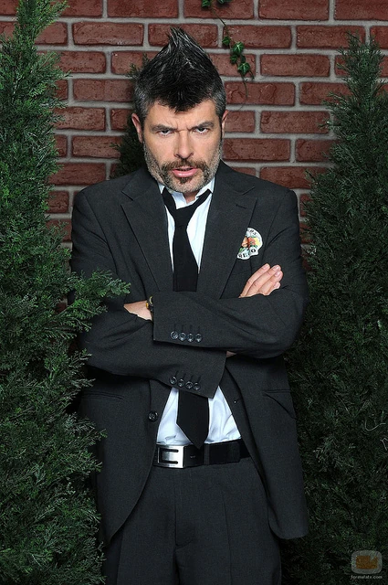

Coque Calatrava
Empresario inversor, dependiente y actual Socio Accionista con el 50% de las Acciones de la Empresa. (Explotado laboralmente y cobrando un llavero al mes.)
Saber más
Antonio Recio Matamoros
Fundador y Dueño de la empresa.
Más de 30 Años de experiencia en el sector
le avalan como profesional.